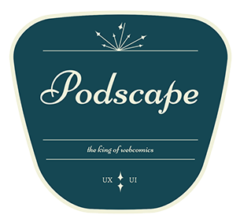

We're back!
Welcome to the reboot -- brand new and ready for what's ahead in our multi-screen entertainment landscape. Consider Podscape your first stop for an incredibly idiosyncratic UX/UI POV on all things gaming, comic, movies, and TV.
Pre-Launch Comments Beta opens soon!
Beta opens 4/1/2017Launch Comments Beta ends soon!
Site Launch 6/1/2017Game Section LaunchBeta ends soon!
Site Launch 8/1/2017